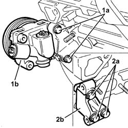
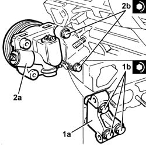

1016E21 Left CYLINDER HEAD - Overhaul
- Path
- Procedures > 10 ENGINE > 1016 CYLINDER HEAD(S) > 1016E CYLINDER HEAD/S - VARIOUS OPERATIONS > 1016E21 Left CYLINDER HEAD - Overhaul
- Kind
- repair procedure (removal / refitting; the operation number is the code)
- Applies to
- engines: 3.0 V6, 3.2 V6; all production periods
- Interactive page
- https://sloeber94.github.io/elrnDB-lThss/en/#/753245
Applies to: engines: 3.0 V6; all production periods
See in Op. 1016E22 Right CYLINDER HEAD - Overhaul - Dismantling
Applies to: engines: 3.2 V6; all production periods
 Removing
Removing
 Refitting
Refitting1. Undo the bolts (1a) and remove the power steering pump (1b).
2. Undo the bolts (2a) and remove the power steering pump mount (2b).

Applies to: engines: 3.2 V6; all production periods
- Proceed as described for the right cylinder head, remembering that the left cylinder head is not equipped with: the reaction rod engine bracket and mobile timing belt tensioner.
Applies to: engines: 3.2 V6; all production periods
Refitting
Removing- Proceed as described for the right cylinder head, remembering that the left cylinder head is not equipped with: the reaction rod engine bracket and mobile timing belt tensioner.
1. Place the power steering pump mount (1a) in its housing and secure it tightening the bolts (1b) to the recommended torque.
 | Value - daNm | Fastening | Component | Ø |
|---|---|---|---|---|
1B | (Cylinder head side) 2.3 - 2 | Bolt | POWER STEERING PUMP SUPPORT/BRACKET | M8 |
2. Place the power steering pump (2a) in its housing and secure it by tightening the bolts (2b) to the recommended torque.
| Value - daNm | Fastening | Component | Ø |
|---|---|---|---|---|
2b | (Mount side) 2.3 - 2.8 | Bolt | POWER STEERING PUMP | M8 |
